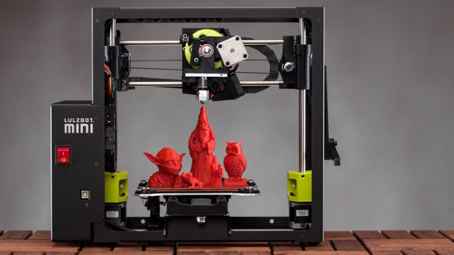

A Clever Use of 3D Printing: Modular Magnetic Construction Set
The quick and easy way to design your next dream kitchen, and dining, and living room...
Modular Magnetic is a series of construction sets with standardized, interchangeable pieces which allow for the construction of a variety of different home layouts. With MMK, you no longer need to imagine how your next dream space will look like, you simply need to start creating it!
